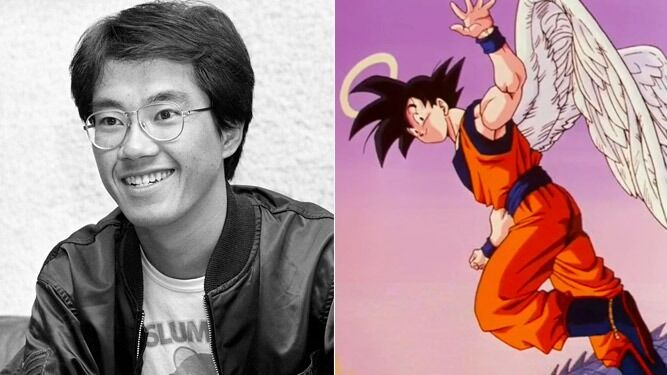

El presidente Milei Prohibe el uso del lenguaje inclusivo

En Argentina, el gobierno extremista de Milei ha decidido prohibir el uso del "lenguaje inclusivo"...
Actualizan informacion de Hollow Knight: Silksong🤡

A diferencia de las actualizaciones anteriores, esta nueva actualizacion tiene detalles ocultos...
Facebook e Instagram se caen por horas
Una interrupción masiva de Facebook e Instagram afectó durante varias horas a los usuarios...
Muere Akira Toriyama, creador de Dragon Ball
El creador de los populares cómics y dibujos animados de “Dragon Ball”, el japonés Akira Toriyama, falleció a los 68 años...